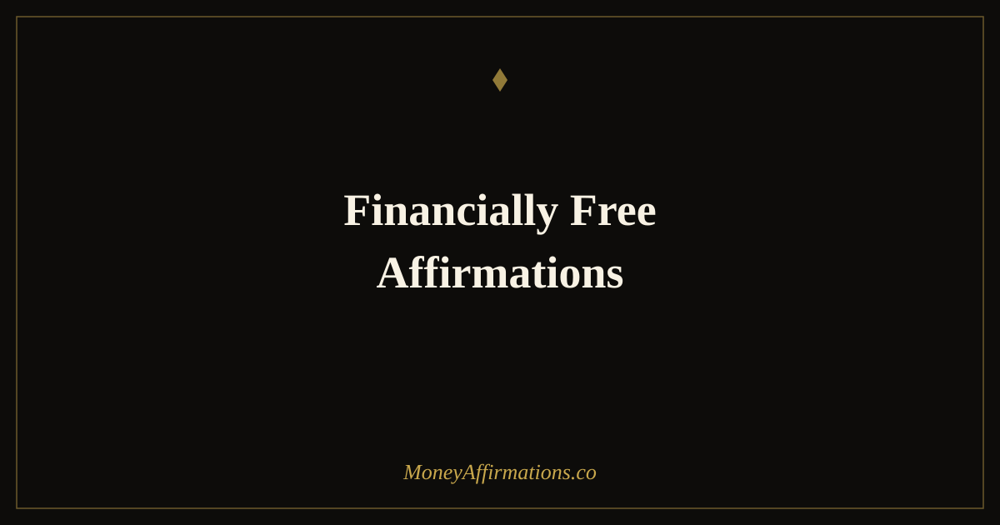

Financially Free Affirmations: 30 Statements for True Freedom

Financial freedom is not a number — it is an identity. The number matters, of course: the savings rate, the invested assets, the passive income stream that eventually covers your costs. But every person who has achieved genuine financial independence will tell you that the internal shift came before the external one. The moment they began to see themselves as someone who would be financially free — not might be, not hoped to be, but would be — was the moment their relationship with money began to change in ways that made the numbers follow.
These 30 financially free affirmations are designed to build that identity in you, long before the spreadsheet shows you have arrived. They work on the beliefs that most commonly slow or block the path to financial freedom: the sense that it is a goal for other kinds of people, the guilt around wanting this much wealth, the creeping fear that something will always prevent you from getting there. Used consistently alongside sound financial strategy, they create the psychological foundation that financial freedom requires.
What are financially free affirmations?
Financially free affirmations are present-tense statements that align your identity with the reality of financial independence — the state where your assets and passive income support your life without requiring you to trade your time for money. They address the specific beliefs that suppress wealth-building behaviour: resignation to financial limitation, discomfort with desiring significant wealth, and the subtle but powerful sense that freedom of this kind is not really for you.
These affirmations complement practical financial action — budgeting, investing, income growth — by ensuring your psychology is working in the same direction. For a full treatment of the financial freedom mindset and the affirmations that support it, explore the financial freedom affirmations collection alongside this one. The broader wealth affirmations collection provides the complete foundation.
30 financially free affirmations
- I am financially free and I build that freedom with every intentional decision I make.
- My money works for me while I sleep, while I rest, and while I live my life fully.
- I am the kind of person who builds wealth consistently and reaches financial independence.
- Financial freedom is not a dream — it is my destination and I am moving toward it every day.
- I save generously, invest wisely, and build the assets that make my freedom possible.
- My passive income grows every year, bringing me steadily closer to complete financial independence.
- I deserve to be financially free and I take the steps that make it real.
- I choose financial freedom over short-term comfort and my future self is grateful for every choice.
- My investments grow quietly in the background, building a life of abundance and choice.
- I am patient with the process of building wealth because I know the compound effect is working for me.
- Every pound and dollar I invest today is buying back my future time and freedom.
- I release the belief that financial freedom is only for certain kinds of people — it is for me.
- My financial habits reflect the freedom I am building — I save first and live well on the rest.
- I understand my finances completely and I manage them with clarity and confidence.
- The path to financial freedom is clear to me and I walk it with consistency and purpose.
- I am not waiting to be rescued financially — I build my own freedom with deliberate, sustained action.
- Money multiplies in my hands because I respect it, invest it, and allow it to grow.
- I have multiple streams of income and each one contributes to my growing financial independence.
- I think in decades, not just months — my financial decisions reflect the long game I am playing.
- Financial freedom gives me the ability to choose how I spend my time and I am building it now.
- I am generous with my wealth because I trust that abundance is always replenished for me.
- I release financial anxiety and replace it with the calm confidence of someone building real security.
- Every financial goal I set, I meet — because I take them seriously and I act consistently.
- I live below my means today so I can live beyond my dreams tomorrow.
- My net worth grows every month and the gap between me and financial freedom closes steadily.
- I am grateful for every step on this path — the discipline, the patience, and the growing reward.
- Financial freedom is not selfish — it is the gift I am giving to my future self and everyone I love.
- I attract income opportunities, investment insights, and financial mentors who accelerate my path.
- I trust the process of wealth-building completely because I am consistent, intentional, and patient.
- I am financially free — in identity, in mindset, and increasingly in the reality I am creating.
How to use these affirmations
The most effective use of financially free affirmations is to combine them directly with your financial actions. Each time you contribute to an investment account, transfer money to savings, or review your net worth statement, speak three affirmations aloud immediately before or after. This creates a neurological link between the physical action of building wealth and the identity of someone who is financially free — which is exactly the association you want your brain to form and reinforce.
For general daily practice, use three affirmations each morning alongside a brief review of one financial metric: your savings rate for the month, your portfolio balance, your progress toward a specific goal. The review gives you evidence; the affirmation gives you identity; together they create the compounding motivation that keeps a long-horizon goal like financial freedom feeling vivid and attainable through the years it takes to reach it.
Why identity drives financial freedom more than tactics
The personal finance space is saturated with tactics: the 50/30/20 budget, the FIRE savings rate, the index fund portfolio. These tactics are sound — but they are not why some people achieve financial freedom and others, with equal incomes and equal access to the same information, do not. The difference, studied extensively by financial psychologists, is identity: the degree to which someone genuinely sees themselves as a person who will become financially independent.
People with a strong financial independence identity make different decisions automatically. They fund their investment accounts before their lifestyle creep expands to consume the surplus. They frame spending decisions in terms of how they affect the journey to freedom. They tolerate short-term sacrifices because the long-term identity makes those sacrifices feel meaningful rather than punishing. Financially free affirmations build this identity systematically, creating the internal environment in which the correct tactics — saving, investing, income growth — become natural expressions of who you are, rather than things you have to force yourself to do. The compound effect of identity operating on behaviour, over years, is extraordinary.
Tips to make them work faster
- Connect affirmations directly to financial actions. Say them aloud when you invest, when you save, when you check your net worth. Link the identity to the action until they feel inseparable.
- Track your net worth monthly. Freedom is built in the numbers — watching them grow makes the affirmations feel increasingly real and increasingly earned.
- Choose a financial freedom number and make it concrete. A vague goal produces vague motivation. "I am financially free when my investments generate £X per month" gives the affirmation a specific target to aim at.
- Automate your investments before you use the affirmations. Affirmations reinforce action; they do not replace it. Set up automatic contributions and then use the affirmations to reinforce the identity of someone who does that.
- Share your goal with one trusted person. Financial freedom is often a quiet, private goal. Naming it to someone who supports you makes it more real and increases accountability.
Frequently Asked Questions
What does being financially free actually mean?
Financial freedom means different things to different people, but the core definition is consistent: it is the state where your passive income — from investments, assets, or businesses — covers your living expenses without requiring you to trade time for money. At that point, work becomes a choice rather than a necessity. The number required varies by lifestyle and location, but the identity and mindset required to get there are universal: consistent saving, deliberate investing, income growth, and the deep belief that this outcome is genuinely available to you.
Can affirmations actually help me become financially free?
Affirmations do not produce financial freedom on their own — strategy, consistency, and time are the primary vehicles. What affirmations do is ensure that your psychology is working toward financial freedom rather than unconsciously resisting it. Many people who intellectually want financial freedom carry deep beliefs that it is not really available to them, that they are not the kind of person who builds wealth, or that wanting this much money is greedy or unrealistic. Affirmations address those beliefs directly, creating the internal alignment from which financial freedom-seeking behaviour — saving aggressively, investing consistently, building income — can actually take root.
How do I stay motivated on the path to financial freedom when it takes years?
The key is connecting with your identity as a financially free person before you have arrived there. Daily affirmations that reinforce this identity — 'I am building my financial freedom,' 'every investment I make brings me closer' — keep you emotionally connected to a goal that can otherwise feel abstract and distant. Tracking concrete milestones (net worth growth, investment contributions, debt paid down) provides the evidence that supports the identity. The combination of identity work through affirmations and evidence collection through tracking creates the sustained motivation that the long path to financial freedom requires.
Financial freedom is one of the most meaningful goals you can commit to. Build the complete wealth mindset that the journey requires by exploring the full wealth affirmations collection and making the identity of financial independence your daily foundation.